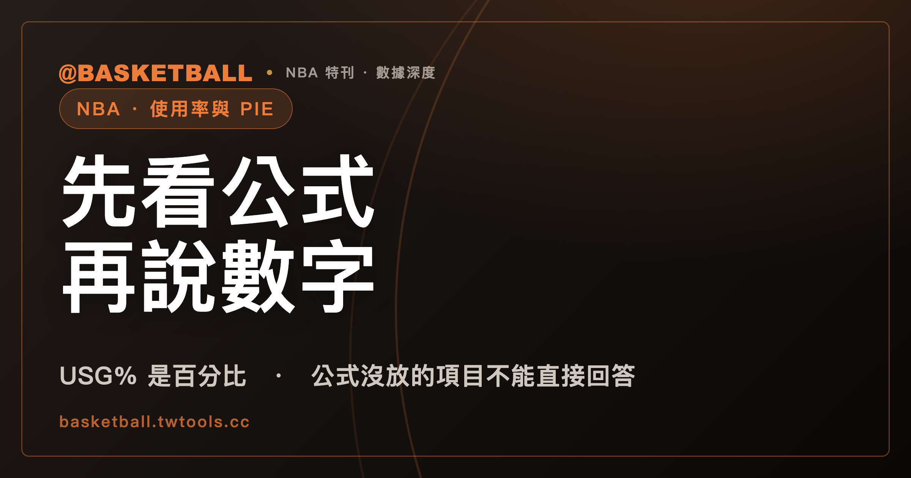

使用率 USG% 與 PIE：先看官方公式裡放了哪些項目，才知道數字能說什麼
依 NBA 官方統計網站詞彙表（2026-09-29 抓取版），USG% 的定義是球員在場時佔用的球隊回合百分比，PIE 則把得分、出手、罰球、籃板、助攻、抄截、阻攻、犯規與失誤放進同一條公式。兩個數字能回答什麼問題，要回到公式各項來看。

新手村｜數據入門・使用率 USG% 與 PIE
NBA 官方統計網站的詞彙表把 USG% 與 PIE 都收成進階（Advanced）類欄位。兩個縮寫看起來像是在講球員的分量，但欄位到底在算什麼，得先回到官方詞彙表看定義與公式。
這篇文章只做一件事：把 NBA 官方統計網站詞彙表（nba.com/stats/help/glossary，本文引用的是 2026-09-29 抓取的版本）裡 USG% 與 PIE 的定義句與公式，逐項拆開來讀。詞彙表是會更新的活頁面，本文的每一句「詞彙表寫了什麼」都只對這個版本負責，不代表 NBA 永遠這樣算。讀完之後，你應該能在數據頁上找到這兩個欄位、自己把一行假設數字代進公式，也能分辨哪些話是公式直接看得出來的，哪些話需要公式以外的依據。
技術統計表上 FGA、FTA、TOV 這些基本欄位怎麼讀，可以先看本站的技術統計表入門；本文假設你已經知道它們是什麼。
USG% 在 NBA 官方詞彙表裡，寫的是百分比還是次數？
依 NBA 官方統計網站詞彙表（2026-09-29 抓取版），USG% 的英文名稱是 Usage Percentage，欄位類型標為 Advanced（進階）。定義句只有一句：
The percentage of team plays used by a player when they are on the floor
中文可以讀成「球員在場上時，佔用了球隊回合的百分比」。這裡的關鍵字是 percentage：詞彙表寫的是比例，分母是球隊的回合，分子是這名球員佔用的部分。讀的時候要留意這個字：條目寫的是比例，不是「他用了多少次進攻」這種總量；總量要看公式分子的原始項目，那是另一件事。
中文的「使用率」是慣稱，對應詞彙表的 Usage Percentage；「回合」也是慣稱，對應 possession 這個詞。詞彙表對 possession 有英文定義，中譯則沒有官方版本。本文其餘地方說「回合」，指的就是這個概念。
順帶一提，詞彙表對 USG% 的條目只放了名稱、一句定義、公式與類型。這個條目裡，沒有出現「效率」「好壞」「核心」之類的詮釋字句。
USG% 的公式只有四個項目：FGA、Possession Ending FTA、TO、POSS
同一個條目裡，公式原文是：
(FGA + Possession Ending FTA + TO) / POSS
分子有三項，分母一項。逐項來看：
| 項目 | 詞彙表怎麼說（意譯） | 備註 |
|---|---|---|
| FGA | 球員或球隊出手投籃的次數，包含兩分球與三分球 | FGA 有獨立條目 |
| Possession Ending FTA | 公式裡出現的詞，詞彙表沒有單獨定義 | 哪些罰球算「結束回合」、有沒有係數，條目沒寫，行文保留英文原文 |
| TO | 公式寫 TO；詞彙表的條目名稱是 TOV（Turnovers），定義為進攻方把球輸給防守方 | 本文的讀法是 TO 與 TOV 指同一項，這是對照名稱後的推論，詞彙表沒有寫這句 |
| POSS | 球員或球隊打過的回合數 | 本文的讀法是公式的 POSS 對應詞彙表的 Poss 條目，USG% 條目沒有寫明它指向哪個條目 |
Poss 條目另外有一句提醒：進攻籃板不會另外產生一個回合，只是讓原本那個回合延長。這句話寫在 Poss 條目裡，不在 USG% 條目裡；把它拿來理解分母，是本文的讀法。
有兩件事值得停一下。第一，Possession Ending FTA 是詞彙表沒有解釋的詞。詞彙表這個條目沒有寫任何乘上罰球的係數，所以本文不補。第二，想知道回合與 Pace（每 48 分鐘的回合數）的關係，可以看本站的進攻效率值與節奏入門，本文不重複展開。
假設一行數字：FGA 18、Possession Ending FTA 4、TO 3、POSS 80，USG% 是多少？
下面是一組假設的數字，不是任何一名真實球員。假設某人在一場比賽裡的 FGA 是 18、Possession Ending FTA 是 4、TO 是 3，而他在場時的 POSS 是 80。代入公式：
- 分子：18 ＋ 4 ＋ 3 ＝ 25
- 分母：80
- 25 ÷ 80 ＝ 0.3125
詞彙表的定義句寫的是 percentage，沒有寫「乘以 100」這個步驟。把 0.3125 寫成 31.25% 是本文的換算，不是詞彙表的原文。
這個算例只示範「怎麼代入」。假設的 18、4、3、80 這幾個數字並沒有對應任何真實比賽，所以 31.25% 這個結果本身沒有任何意義，也不能拿來和真實球員的欄位比較。
自己動手的方法：對照一位球員的原始統計，找出 FGA 與 TOV，再確認在場的 POSS。詞彙表沒有教 Possession Ending FTA 怎麼從罰球出手數判斷，所以這一項光靠詞彙表無法自己重算，這也是本文的算例要把它當成「假設給定」的原因。
PIE 的分子與分母用同一組項目，差別只在分母每一項前面多了 Gm
PIE 的英文全名在詞彙表裡是 Player Impact Estimate，類型同樣標為 Advanced。本文保留英文全稱，不另外自創中文譯名；「影響力」是中文慣稱，並不是詞彙表用語。
詞彙表對 PIE 的第一句定義是：
PIE measures a player's overall statistical contribution against the total statistics in games they play in.
中文可以讀成「PIE 衡量一名球員的整體統計貢獻，相對於他所在比賽全部統計的比例」。第二句提到 PER，說 PIE 用簡單的公式產生可以和其他進階統計（例如 PER）比較的結果。詞彙表本身沒有 PER 的獨立條目，所以本文不寫 PER 的定義。
公式分成分子與分母。分子原文：
(PTS + FGM + FTM - FGA - FTA + DREB + (.5 * OREB) + AST + STL + (.5 * BLK) - PF - TO)
分母原文：
(GmPTS + GmFGM + GmFTM - GmFGA - GmFTA + GmDREB + (.5 * GmOREB) + GmAST + GmSTL + (.5 * GmBLK) - GmPF - GmTO)
兩條式子的項目一一對應，分母每一項前面多了 Gm。詞彙表沒有為 Gm 前綴單獨寫定義。本文的讀法是：Gm 代表「這場比賽裡所有球員的合計」，這個讀法來自第一句定義的 total statistics in games they play in，再對照分母的寫法，屬於推論，不是詞彙表逐字的說法。
分子裡的每一項，詞彙表都有對應的獨立條目：
| 項目 | 詞彙表怎麼說（意譯） | 在分子裡的寫法 |
|---|---|---|
| PTS | 得分數 | ＋ |
| FGM | 進球數，含兩分球與三分球 | ＋ |
| FTM | 罰球進球數 | ＋ |
| FGA | 出手數，含兩分球與三分球 | － |
| FTA | 罰球出手數 | － |
| DREB | 防守籃板數 | ＋ |
| OREB | 進攻籃板數 | ＋，乘 0.5 |
| AST | 助攻數，即直接導致進球的傳球 | ＋ |
| STL | 防守方從進攻方手上奪球並造成失誤的次數 | ＋ |
| BLK | 進攻球員出手、防守球員把球撥掉的次數 | ＋，乘 0.5 |
| PF | 個人犯規數 | － |
| TO | 公式寫 TO；本文讀為與 TOV 同一項，進攻方把球輸給防守方 | － |
看這張表可以直接讀出：PIE 的分子不是只加不減。出手、罰球出手、犯規與失誤在公式裡是減項，得分、進球、籃板、助攻、抄截與阻攻是加項，進攻籃板與阻攻各乘 0.5。
假設一行數字，PIE 分子與分母各是多少？
再做一次假設算例，同樣不是任何一名真實球員，也不是任何一場真實比賽。假設某人這場的數字是：PTS 20、FGM 8、FTM 4、FGA 16、FTA 5、DREB 5、OREB 2、AST 4、STL 1、BLK 1、PF 3、TO 2。
分子逐項相加減：
- 20 ＋ 8 ＋ 4 ＝ 32
- 32 － 16 － 5 ＝ 11
- 11 ＋ 5 ＝ 16
- 16 ＋（0.5 × 2）＝ 17
- 17 ＋ 4 ＋ 1 ＝ 22
- 22 ＋（0.5 × 1）＝ 22.5
- 22.5 － 3 － 2 ＝ 17.5
分母需要「這場比賽所有球員」的同一組合計，這裡直接假設分母算出來是 200。那麼 17.5 ÷ 200 ＝ 0.0875，寫成百分比是 8.75%。同樣地，乘 100 是本文換算；分母的 200 是為了示範假設出來的，沒有對應真實比賽。
這組算例只證明一件事：公式的加減與係數，照著填就能算，不必猜。它不能證明 8.75% 算高還是算低，詞彙表沒有為 PIE 寫過任何高低門檻或聯盟平均。
把兩條公式擺在一起：USG% 看得到哪些項目，PIE 看得到哪些？
把 USG% 與 PIE 的公式項目逐項清點，可以做成下面的對照。這張表是對兩條公式做項目清點的結果，是本文的推論，不是詞彙表一句話說出來的結論：
| 項目 | USG% 公式 | PIE 公式 |
|---|---|---|
| FGA（出手） | 有，在分子，加 | 有，在分子，減 |
| 罰球出手 | 只有 Possession Ending FTA，加 | 用 FTA，減 |
| TO（失誤） | 有，在分子，加 | 有，在分子，減 |
| 得分、FGM、FTM（命中） | 看不到 | 有，加 |
| 籃板 | 看不到 | DREB 加，OREB 乘 0.5 加 |
| AST、STL、BLK | 看不到 | 有，加（BLK 乘 0.5） |
| PF（犯規） | 看不到 | 有，減 |
| 除以什麼 | POSS（球員在場的回合） | 分母是同組項目的 Gm 版本（比賽全部球員合計） |
從對照表可以讀到幾件事：
- 依本文逐項清點的結果，USG% 的公式項目裡看不到命中數、助攻與防守項；公式沒有放這些項目。
- 同一個 FGA，在 USG% 是加項，在 PIE 是減項。兩個欄位對同一個出手數的正負號不同。詞彙表沒有寫兩者為何這樣設計，本文不推測原因。
- 分母也不同。USG% 除以球員在場時的回合，PIE 除以所在比賽的合計（依本文對 Gm 的讀法）。所以「多少算高」這種問題，得先問是拿什麼當分母。
詞彙表沒有寫的事：高低門檻、好壞解讀與公式沿革
這一節列出詞彙表這兩個條目沒有寫、本文因此也不寫的事：
- 沒有高低門檻或聯盟平均。 USG% 與 PIE 的條目都沒有寫「多少算高、多少算低」。
- 沒有好壞或角色的解讀。 條目沒有把 USG% 與「核心」「效率」掛鉤，也沒有把 PIE 與贏球連結。要下這類判斷，需要公式以外的依據，本文不處理。
- 沒有寫計算範圍。 條目沒有說明數字是單場、單季還是其他範圍。
- 沒有公式沿革。 詞彙表沒有標版本或修訂日期，所以本文只寫 2026-09-29 抓取的這個版本，不拿更早或更晚的說法頂替。
- 沒有 Possession Ending FTA 與 Gm 的單獨定義。 前面已提過，行文保留英文原文。
另外，本文只寫官方詞彙表有定義的欄位。PER 在 PIE 的定義句裡被提到，卻沒有獨立條目；BPM、VORP 等詞在詞彙表裡也找不到條目，所以本文不寫它們的定義。
台灣職籃（TPBL、PLG）數據頁的欄位詞彙，可以看本站的台灣職籃統計詞彙入門。本文寫的是 NBA 官方統計網站詞彙表，不適用於那些頁面。
下次在數據頁上看到 USG% 或 PIE，可以自己做哪三件事？
以下是編輯的讀法，不是官方規定：
- 第一步，找欄位名稱。 在 NBA 官方統計網站上看到 USG% 或 PIE 縮寫時，回詞彙表確認它對應的是 Usage Percentage 或 Player Impact Estimate，類型標為 Advanced。
- 第二步，看公式有哪些項目。 對照本文的兩張表，問問自己：這個欄位的公式裡有沒有放想看的東西（例如命中、助攻、防守）？公式沒放的項目，這個欄位就不能直接回答關於它的問題。
- 第三步，問分母是什麼。 USG% 的分母是球員在場的回合；PIE 的分母依本文讀法是所在比賽的合計。分母不同，數字就不能直接拿來互相比較。
至於「這個數字高代表什麼」，詞彙表沒有寫。想寫進自己的判斷之前，應另外找有明確說明的依據，並註明依據與版本。
常見問題
USG% 在 NBA 官方詞彙表是次數還是百分比？
百分比。依 NBA 官方統計網站詞彙表（2026-09-29 抓取版），USG%（Usage Percentage）的定義是 The percentage of team plays used by a player when they are on the floor，即球員在場上時佔用的球隊回合百分比。公式為 (FGA + Possession Ending FTA + TO) / POSS。詞彙表是活頁面，日後可能改動；乘 100 寫成百分比是本文的換算，詞彙表沒有寫這個步驟。
USG% 公式裡有沒有命中數或助攻？
依 NBA 官方統計網站詞彙表 2026-09-29 抓取版的公式 (FGA + Possession Ending FTA + TO) / POSS，逐項清點後，項目裡看不到命中數、助攻與防守項。這是本文對公式逐項檢視的結果，詞彙表沒有用一句話寫出「不含這些」。
PIE 只是把得分加總嗎？
依 NBA 官方統計網站詞彙表（2026-09-29 抓取版），PIE 的公式分子包含加項（PTS、FGM、FTM、DREB、0.5 × OREB、AST、STL、0.5 × BLK）與減項（FGA、FTA、PF、TO），分母是同一組項目加上 Gm 前綴。詞彙表沒有為 Gm 單獨定義；本文讀為「比賽全部球員的合計」，這是推論。
USG% 或 PIE 數字高，代表球員很重要或表現好嗎？
依 NBA 官方統計網站詞彙表（2026-09-29 抓取版），USG% 與 PIE 的條目都只有名稱、定義、公式與類型，沒有寫高低門檻、聯盟平均或好壞解讀，也沒有把 USG% 與效率或角色連結、把 PIE 與贏球連結。因此本文不對「高代表什麼」下判斷；要下判斷，需要公式以外的依據。
資料來源
- NBA 官方統計網站詞彙表（NBA Stats Glossary，活頁面，2026-09-29 抓取版，頁面無版本標記；USG%、PIE 條目及 FGA、FTA、FGM、FTM、DREB、OREB、AST、STL、BLK、PF、PTS、TOV、Poss、Pace 各條目）：nba.com/stats/help/glossary